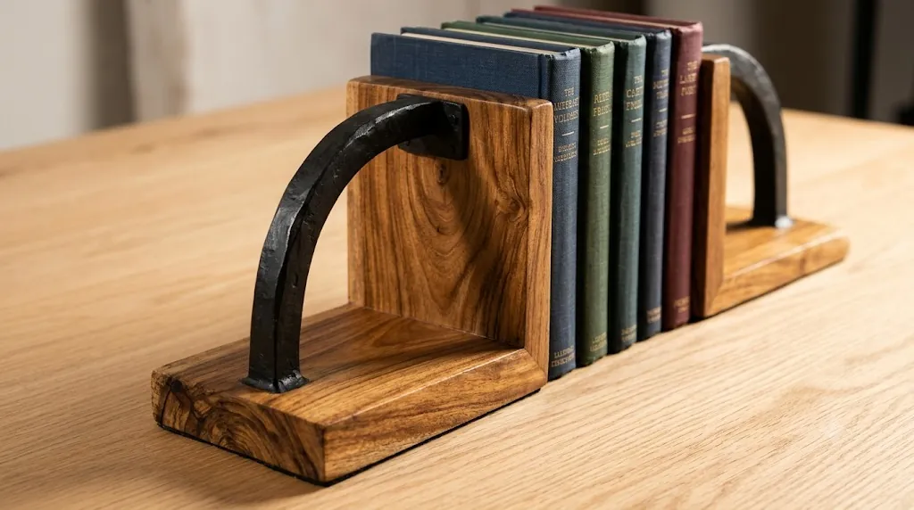

AA-SW-268 · Cat 27
Vintage Cast-Iron Sewing Machine Silhouette Bookends
Handcrafted Craft Room Decor handcrafted export piece engineered for Amazon, Joann wholesale programs.
$7.80 – $10.20 FOB Mundra · per unit · MOQ 100 Pcs
| Material & construction | Heavy cast-iron bookends shaped like vintage treadle sewing machines |
|---|---|
| Dimensions | 6" x 3.5" x 6.5" (ea) / 15 x 9 cm |
| Carton volume | 0.004 CBM / unit |
| Minimum order | 100 Pcs |
| Lead time | 45–60 Days (FOB Mundra) |
| Western retail benchmark | $40 – $55 |
| Style | Craft Room Decor |
| Indicative HS heading | 4420.90 — Wooden boxes, cases & ornaments |
| Typical buyers | Amazon, Joann |
Indicative HS heading only — your customs broker confirms final classification. Kiln-dried 8–10% moisture, ISPM-15 dunnage, VRIKSH / Lacey / EUDR paperwork on request.